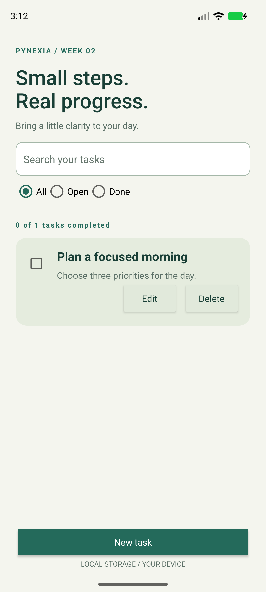
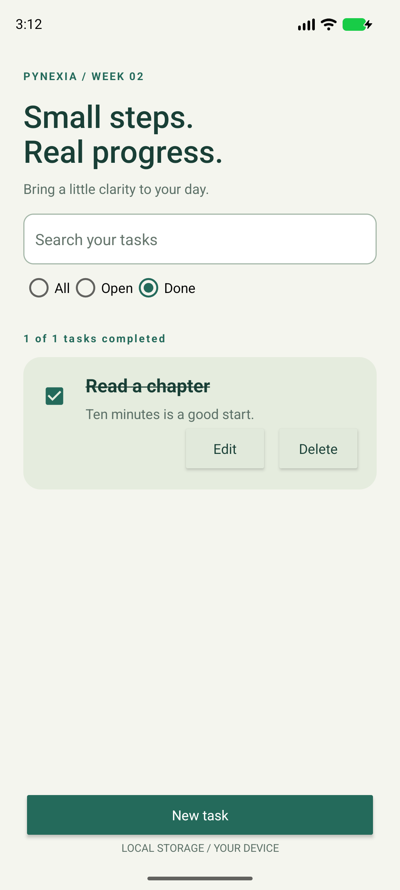

Native Android · Java + XML
To-Do List App
Small steps. Real progress.
Manage daily tasks with add, edit, delete and completion controls, a RecyclerView list, status filters and durable local SQLite storage.
Project showcase · Android 8.0+ · Evaluation build.
This page is not an Android emulator.

01 / Implementation
Built around the assignment
Week 2: lists, adapters, collections and local data persistence.
Read the bilingual implementation report (PDF)Task CRUD
Each task has a required title, optional details and a stable ID. SQLite stores all fields. A custom ListAdapter binds each item and its actions.
Completion and filtering
A checkbox persists the done flag and adds a strike-through title. All/Open/Done filters and literal text search can be combined. The count reports completed versus total tasks.
Lifecycle and feedback
Invalid titles show field errors. Delete requires confirmation. Background database work avoids blocking the UI; ViewModel retains in-flight editor saves.
02 / In the app
Actual screens. Verified flows.
Captured from the native Android app. Select a screenshot to see it at full resolution.



03 / Try it
A short review walkthrough
- Tap New task, enter a title and optional details, then Save.
- Mark the checkbox and confirm the title is crossed out.
- Switch between Open and Done, then reopen the app to check persistence.
- Edit, search, uncheck or delete a task. Cancelling deletion preserves it.
Build and run from source
Open the repository root in Android Studio. Use SDK 35 / Build Tools 35.0.0 and JDK 17 or 21. Sync Gradle, then run the todo module. Initial sync needs internet.
Verification / 2 November 2026
Checks with documented limits
Validation and search, SQLite CRUD/reopen, UI add/edit/delete/cancel, editor recreation, completion persistence and All/Open/Done filtering.
4 JVM tests and 4 device tests passed. Lint: zero errors, 18 warnings without suppression.
Pixel 8 emulator, Android 17 / API 37 (37.1 image), x86_64. No physical-device or API 26 test run.
Inspect verification resultsشرح التمرين
ينظم التطبيق المهام اليومية مع الإضافة والتعديل والحذف وتحديد المهمة كمكتملة. يحتفظ بحالة الإنجاز محليًا، ويتيح عرض جميع المهام أو المفتوحة أو المكتملة والبحث في محتواها. ترتبط الأزرار ومربعات الاختيار بالسجل الصحيح حتى عند تغيّر ترتيب القائمة.
04 / Submission kit
Ready for the project form
Copy the links and notes, then attach the ZIP or PDF. This page does not submit to Pynexia.